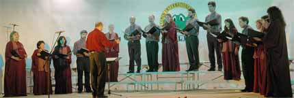

Historia

La Fundación “C.I.C.” nació en 1997 en Trelew, provincia del Chubut, con un propósito concreto: sostener y difundir el Certamen Internacional de Coros de Trelew y todas sus actividades relativas. Con el tiempo, aquel apoyo a un único evento se convirtió en una agenda coral propia que unió a los elencos de la región con el movimiento coral nacional e internacional.
Cronología
- 1997Creación de la Fundación. Personería Jurídica Nº 1761/97; Estatutos Sociales aprobados por Resolución 96/97 de la Inspección General de Justicia del Chubut.
- 1998Festival Internacional de Coros de Niños y Jóvenes “Chubut Canta a la Naturaleza”.
- 2000Primavera Coral del Chubut. Comienzan los ciclos de Conciertos de Invierno y Conciertos de Primavera (2000–2003).
- 2001Festival “Trelew Coral 2001”.
- 2002Segunda edición de la Primavera Coral del Chubut.
- 2003Coproducción del Ciclo Cultural “AUTOSUR 2003”. Cierre de los ciclos de conciertos de temporada.
- 20099ª edición del Certamen Internacional de Coros, del 13 al 19 de septiembre. Se pone en línea este sitio web.
- 2011La Fundación acompaña el Simposio Coral 2011 — World Symposium on Choral Music.
A lo largo de todos esos años, la Fundación celebró además cada año el Día Internacional del Canto Coral, con recitales especiales que reunieron a los coros de la región.